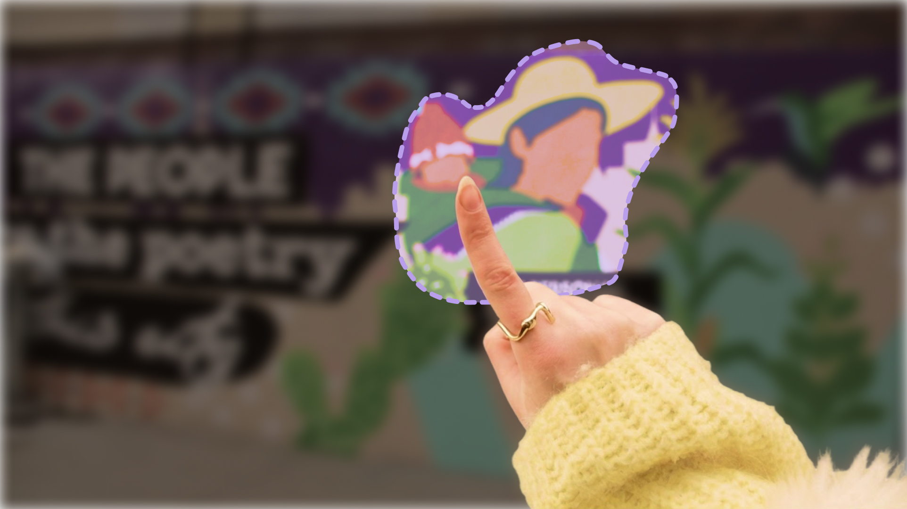

Forage is a gesture-controlled ring and AI-powered library that turns everyday inspiration into reusable design assets. Designed with three teammates in 72 hours for FigBuild 2026.
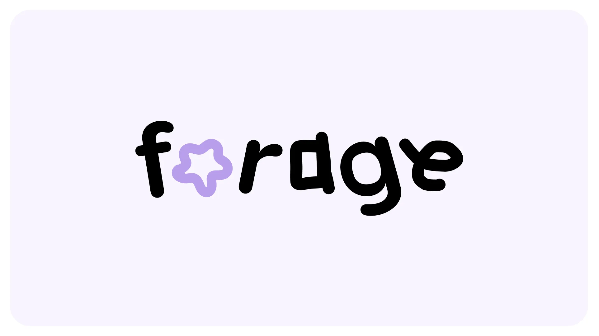
FigBuild challenge
Design a tool that reimagines human perception.
For FigBuild 2026, we had 72 hours to design around sensory input. I led AI systems design and interactive prototyping; Lucy directed creative strategy, Kinza led branding and research, and Melody developed the wearable hardware concept.
FigBuild 2026 rules, posted by Figma @ Parsons (@figmaatparsons) ↗
Problem
For designers, the world is an asset library you can’t “Save As.”
Designers notice inspiration in everyday colors, forms, typography, and motion, but capturing it interrupts the moment and leaves references scattered, disconnected from their context.
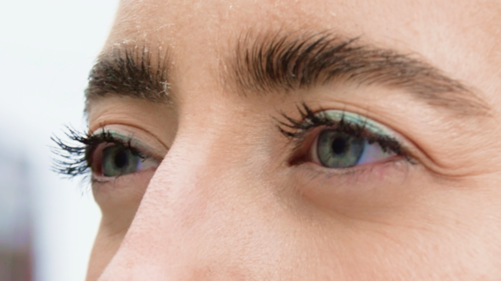
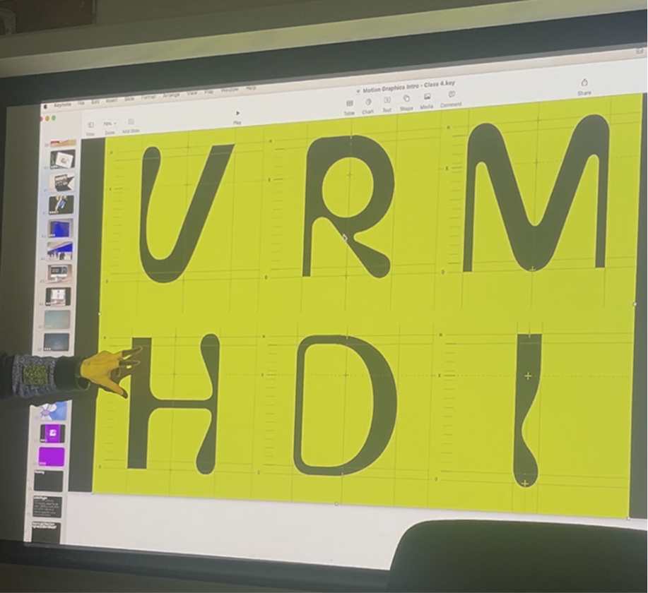
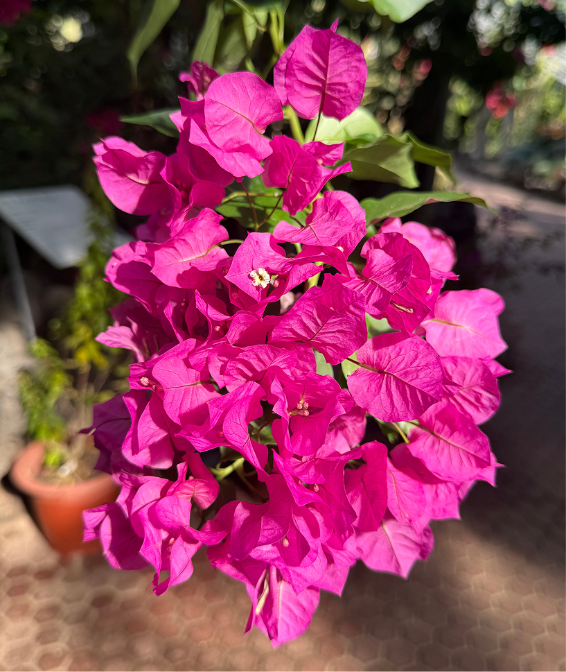
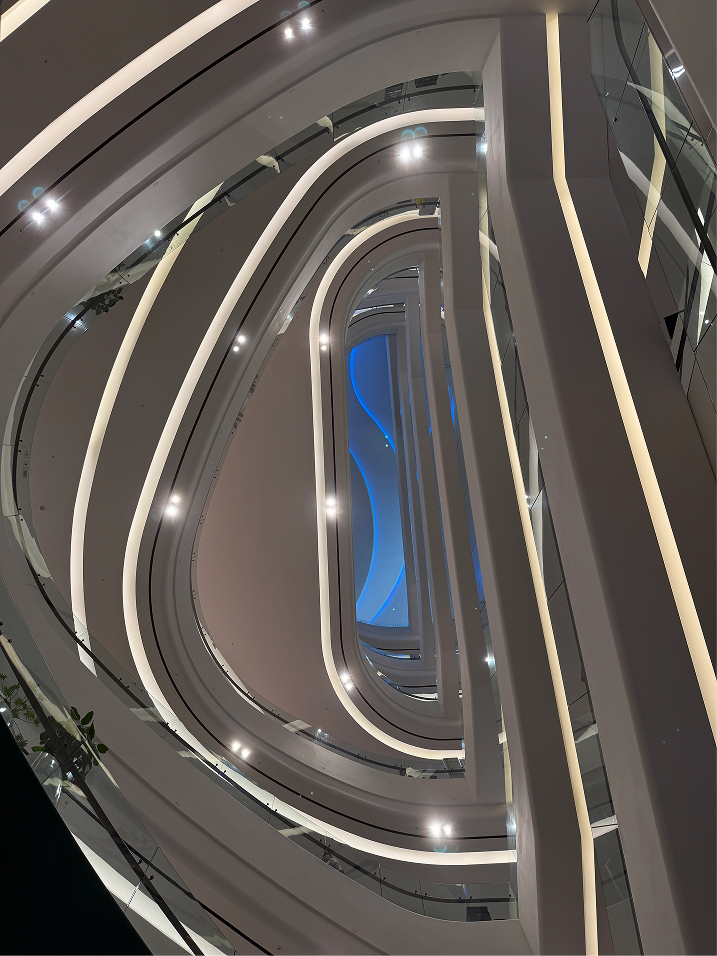
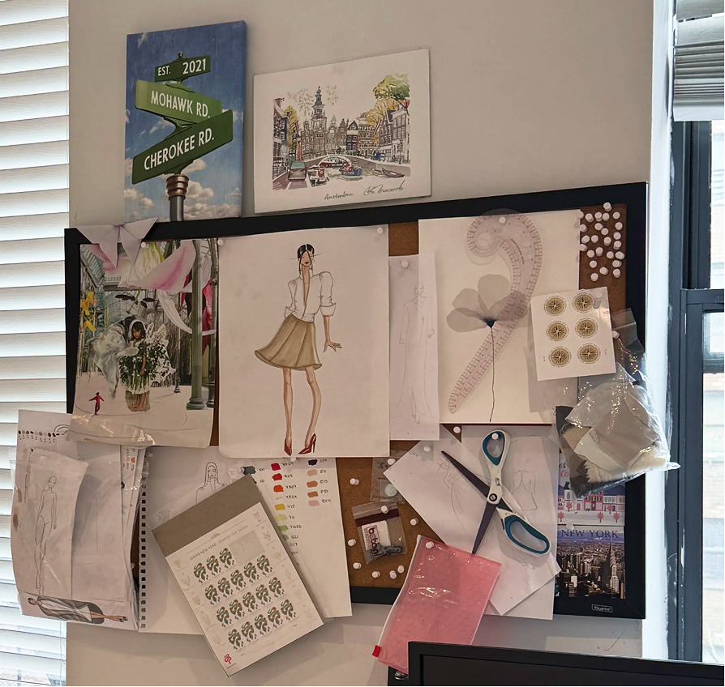
Opportunity
How might we make capturing inspiration as effortless as noticing it, while keeping it useful for future creative work?
Solution
From observation to reusable asset, in one gesture
Forage pairs a gesture-controlled ring with an AI-powered library to capture everyday inspiration and transform it into organized, reusable design assets.


Spot
Capture inspiration without reaching for a phone.
Gather
Use gestures to capture images, colors, typography, or motion.
Create
Turn captures into reusable assets in a searchable library.
Core Experience
Four ways to capture inspiration. One consistent interaction.
Wearable
A capture tool designed to be worn, not carried
Worn on the pointing finger, the ring combines a jewelry-inspired form with always-accessible capture.
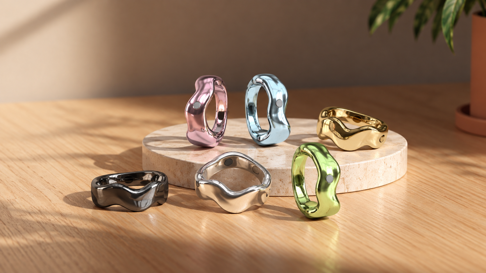
Activate
Double tap to activate.
The ring stays off by default and only begins capturing when intentionally activated with a double tap.
Image capture
Tap once for images.
Outline a reference and tap once to save it as a PNG or JPG.
PNG · JPG
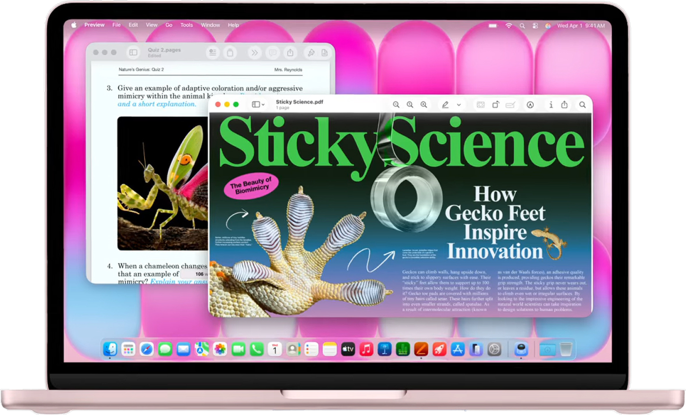
Typography capture
Two-finger drag for typography.
Trace lettering to extract text and identify a matching typeface, with downloads subject to font licensing.
OTF · TTF
Color capture
Two-finger tap for colors.
Sample a color and copy its HEX code directly into a design file.
HEX
Motion capture
Hold and drag for motion.
Capture movement as an MP4 or GIF, with timing data exported as JSON.
MP4 · GIF · Curve JSON
Digital Platform
A creative library built around what you collect.
Field stores captures, Boards organizes them into projects, and Explore makes shared inspiration discoverable.
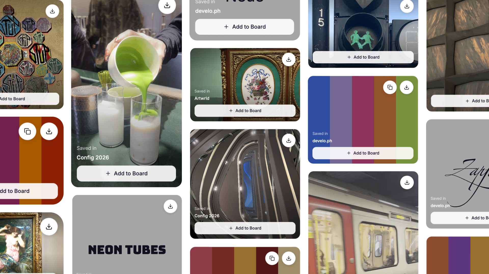
Field
Find what you captured.
Filter captures by asset type and access their details.
Boards
Organize inspiration around your projects.
Collect references into boards by project, theme, or creative direction.
Explore
Discover inspiration beyond your own collection.
Browse public boards, follow designers, and save shared references.
Profile & Settings
Personalize your creative workspace.
Manage visibility, exports, followed designers, and ring preferences.
Interactive prototype
Explore Forage.

Research
From a familiar frustration to a wearable interaction
Validating the problem
Inspiration gets saved, then forgotten.
Design-community discussions revealed recurring frustrations with scattered references, lost context, and difficulty finding saved inspiration.
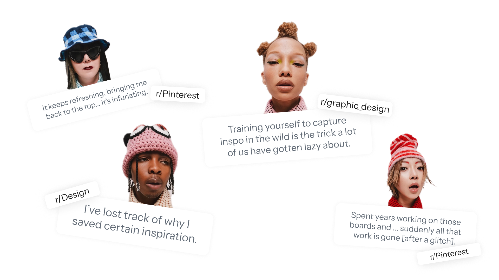
Target user
Chia finds inspiration in everyday details.
Chia collects visual references throughout her day but struggles to retrieve and reuse them when starting a project.

Concept
The Invisible Sense
We framed inspiration as an invisible sense: recognizing creative potential in everyday surroundings, then designed a physical interaction to capture that moment, drawing on research on creative inspiration and Carnegie Mellon design research.
Wearable landscape
Wearability shaped the form factor.
Jewelry and wearable references informed a discreet ring designed for natural, tactile interactions without reaching for a screen.
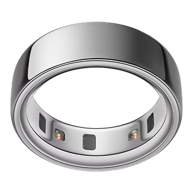
BIOMETRIC RINGS SMARTWATCHES
SMARTWATCHES
 SMART GLASSES
SMART GLASSES
 NECKLACES
NECKLACES
 PIN CAMERAS
PIN CAMERAS
Build
Designing the physical and digital experience as one system
We developed the ring and web experience in parallel, refining the form factor, gesture vocabulary, and organization of captured assets.
Wearable rendering
Designing for everyday wear.
We explored the ring's silhouette, placement, and finishes in Rhino 3D, balancing a jewelry-inspired form with the proposed hardware and freedom of movement.
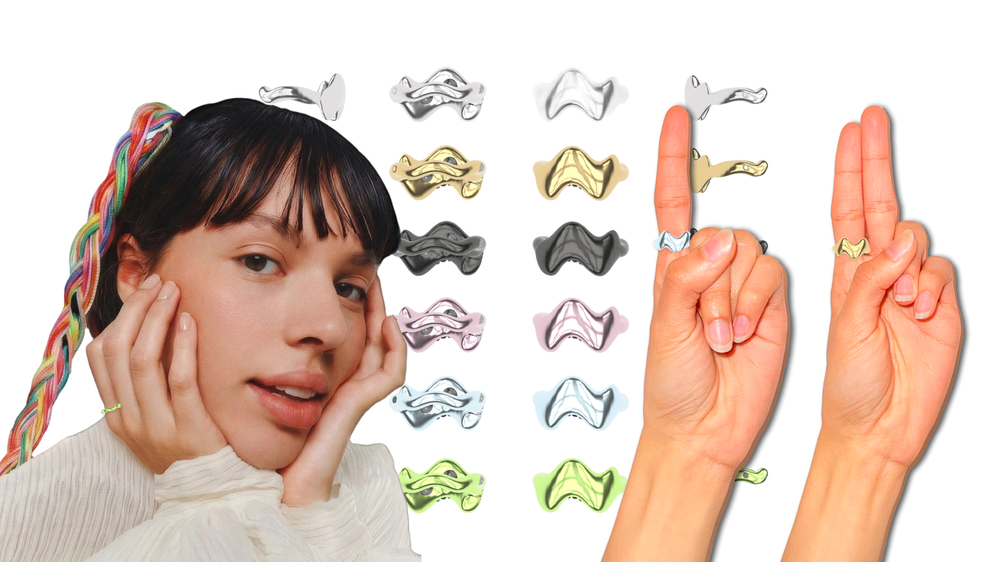
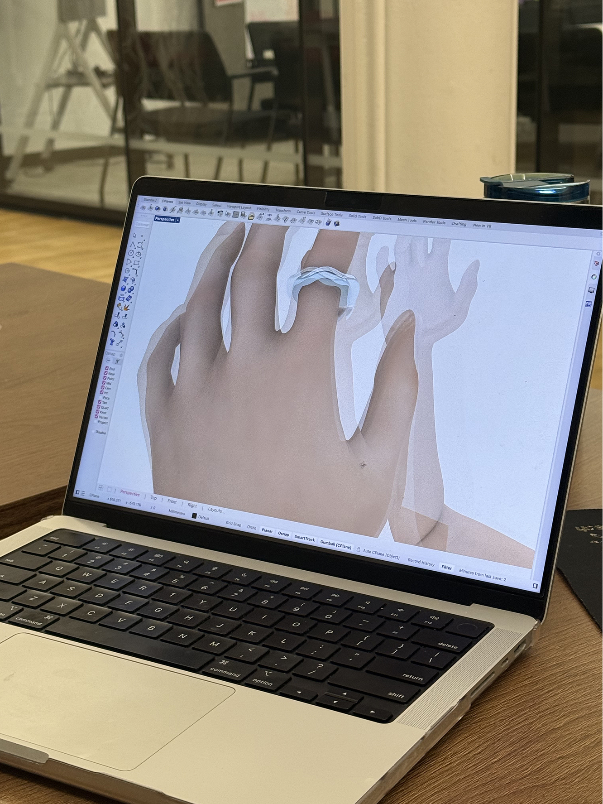

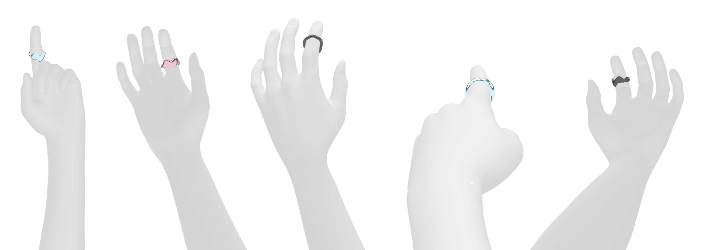
Gesture fine-tuning
One shared gesture, four distinct actions
We compared gesture combinations for ease and distinction, settling on a shared selection gesture followed by an asset-specific action to simplify the interaction model.
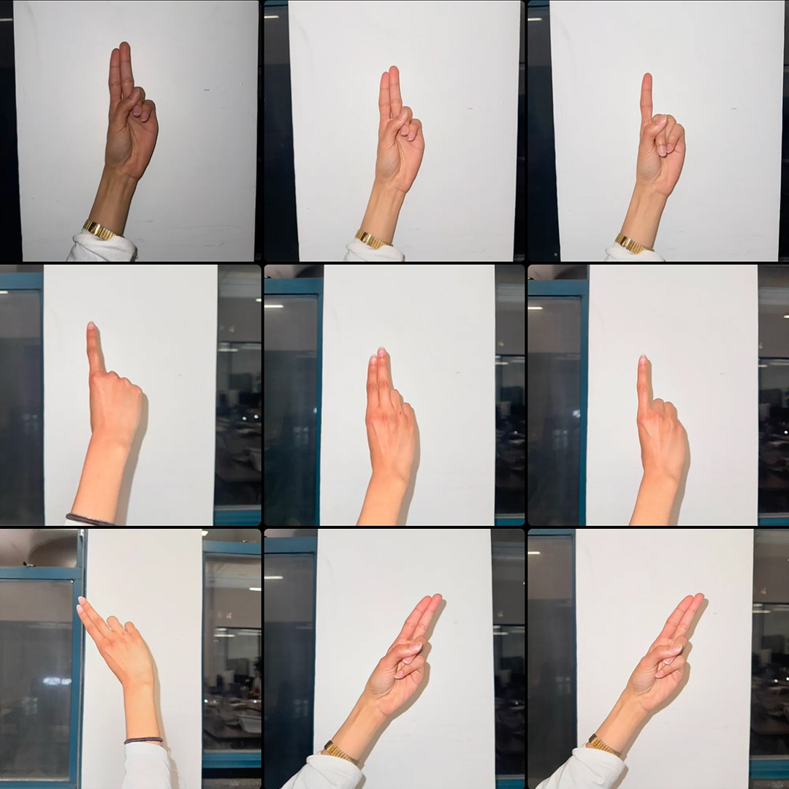
Digital product
From a generic dashboard to a capture-first experience
I iterated the interactive prototype in Figma Make, prioritizing captured assets and separating collection, organization, and discovery into Field, Boards, and Explore.
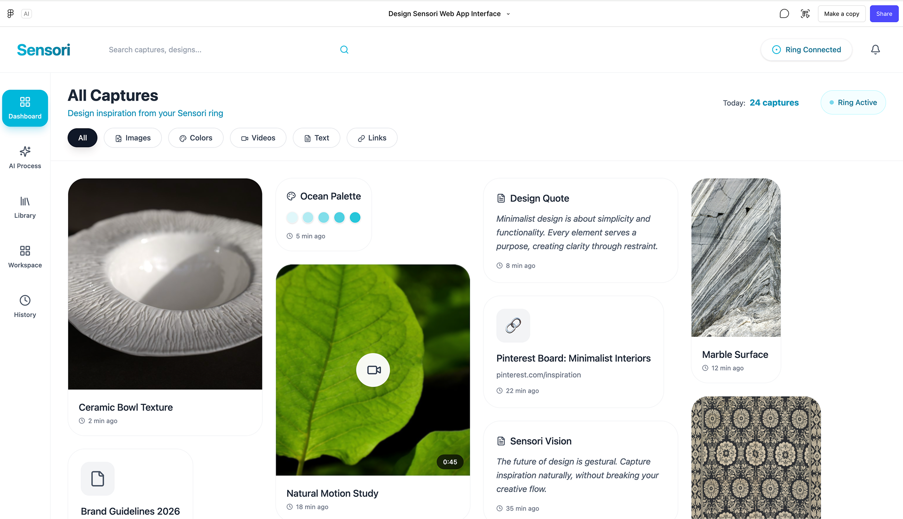


System Design
One capture moves through hardware, intelligence, and software.
The proposed ring selects a reference, AI processes it into a reusable asset, and the library makes it accessible. The web prototype demonstrates the library; hardware sensing and AI processing remain conceptual.
Wearable hardware concept
Every part of the ring supports one moment of the gesture.
A proposed micro-camera captures visual input, motion sensors track selection, gesture recognition identifies the action, and haptics confirm capture without a screen.
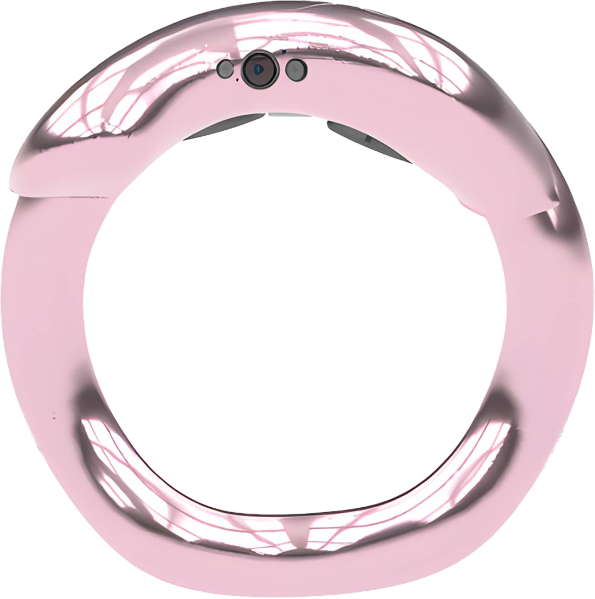
AI creative intelligence
Extract what designers can actually reuse.
The proposed AI pipeline converts each capture into an asset-specific output, from image files and font matches to HEX codes and motion data, with privacy safeguards built into the concept. The concept excludes identifiable faces, disables capture in sensitive locations, and keeps saved records visible and editable.
- Image Isolate the selected subject and generate a reusable PNG.
- Typography Extract text through OCR and identify matching typefaces.
- Color Sample selected colors and generate HEX values.
- Motion Preserve captured movement as a clip, loop, and timing curve.
Image
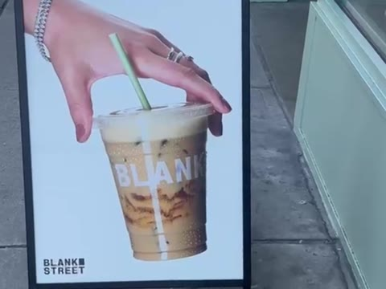
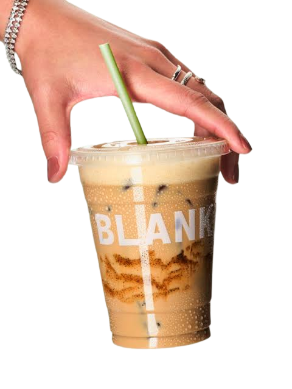
Typography
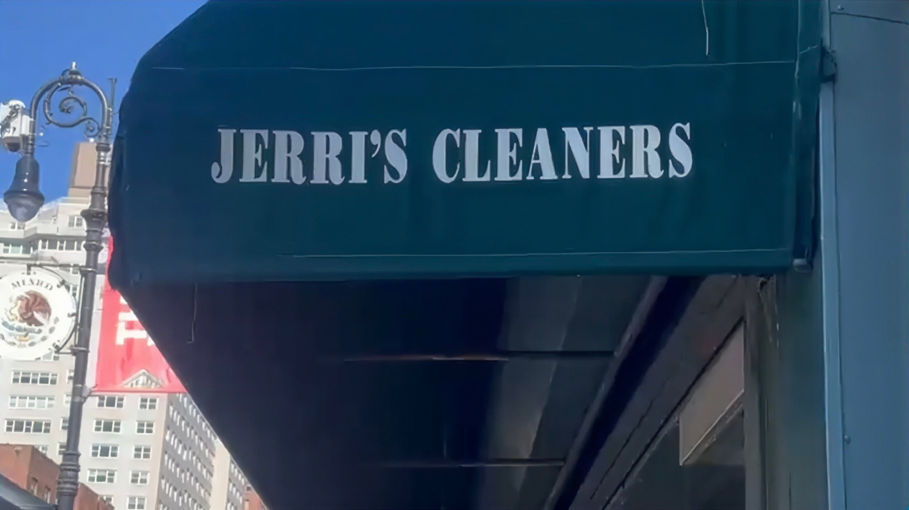
Color
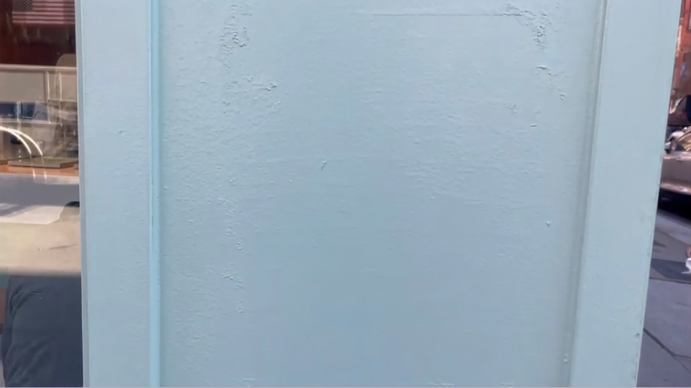
Motion
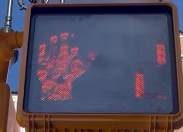
Branding
An identity inspired by collecting and creating.
Kinza and Lucy led a tactile, hand-drawn identity built around a sketched bloom, expressive colors, and playful physical applications.
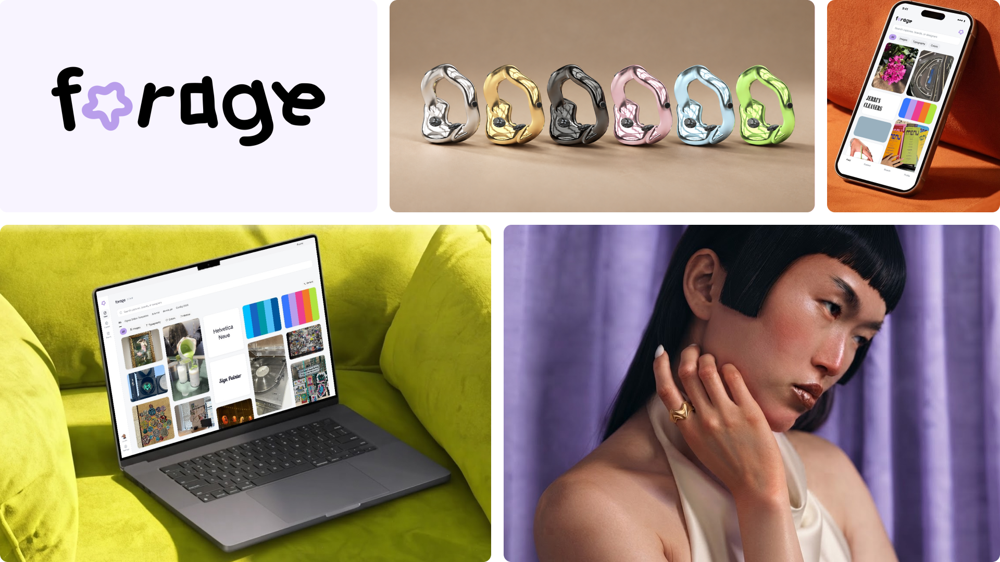
Submission
A complete product concept, prototyped in 72 hours
We submitted a product demonstration, pitch deck, and interactive web prototype.
Reflection
A seamless experience depends on what happens between interactions.

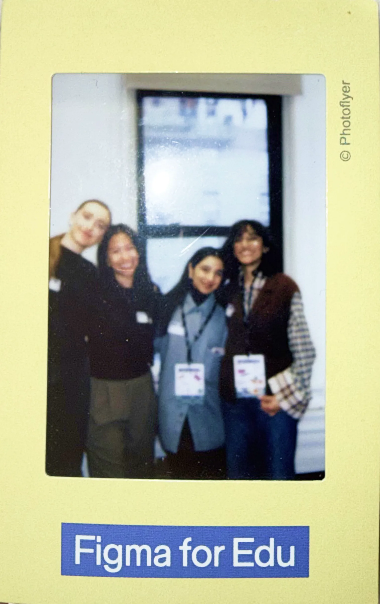
Takeaway 01 · User behavior
Capturing natural interactions should feel effortless, but its value comes from making it reusable.
Takeaway 02 · Designing with AI
AI accelerated prototyping, but clear system boundaries kept the concept and working experience distinct.